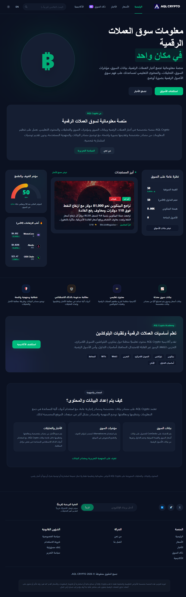
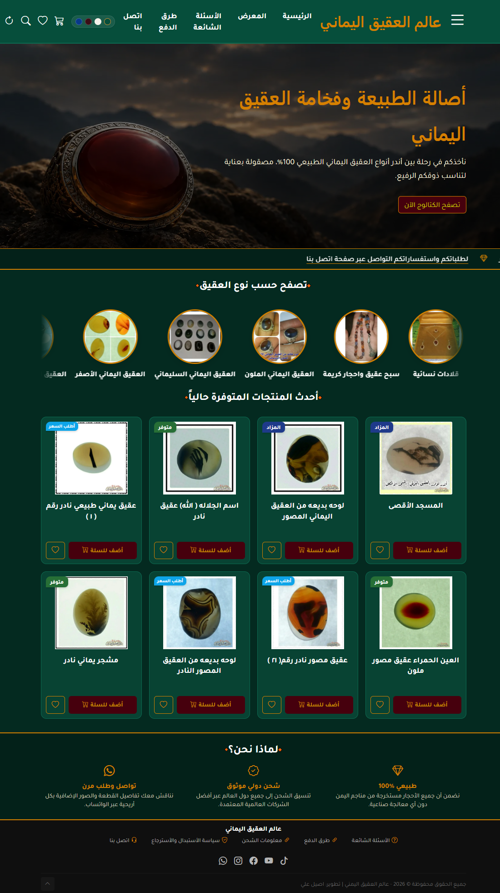

خلفية أكاديمية
حاصل على درجة البكالوريوس في تقنية المعلومات، مع اهتمام بتطوير الويب، وقواعد البيانات، وتصميم الحلول البرمجية المنظمة.
مرحبًا، أنا
خريج بكالوريوس تقنية معلومات، أعمل على تطوير مواقع الويب والأنظمة البرمجية العملية، من تنظيم الواجهات وقواعد البيانات إلى بناء الوظائف ومعالجة المشكلات وتحسين الأنظمة القائمة.
أجمع بين الخلفية الأكاديمية في تقنية المعلومات والتطبيق العملي لتطوير مواقع وأنظمة تساعد على تنظيم الأعمال وحل المشكلات.
حاصل على درجة البكالوريوس في تقنية المعلومات، مع اهتمام بتطوير الويب، وقواعد البيانات، وتصميم الحلول البرمجية المنظمة.
أعمل على بناء مواقع الويب والأنظمة البرمجية لمجالات مختلفة، مع الاهتمام بترابط الواجهات والمنطق البرمجي وقواعد البيانات.
أتعامل مع أخطاء الأنظمة القائمة، وأعمل على فحص أسبابها وإصلاحها، وتحسين الوظائف الموجودة وإضافة ميزات عند الحاجة.
أطوّر مهاراتي باستمرار من خلال بناء المشاريع، والرجوع إلى التوثيق الرسمي، ومراجعة الحلول البرمجية وتحسينها.
مجموعة من تقنيات الويب والبرمجة وقواعد البيانات المستخدمة في مشاريعي العملية.
بناء هيكل صفحات الويب
تنسيق الواجهات والتجاوب
التفاعل ومنطق الواجهة
تطوير تطبيقات الويب الخلفية
واجهات تفاعلية للمستخدم
تصميم البيانات والاستعلامات
أختار التقنيات بحسب متطلبات المشروع، وأستفيد من الوثائق التقنية وأدوات التطوير والذكاء الاصطناعي، مع مراجعة الكود وفهمه واختباره قبل اعتماده.
نماذج من المشاريع التي عملت عليها في تطوير المنصات والمواقع والأنظمة الإدارية.

PROJECT 01منصة معلومات موجهة للمستخدم العربي تجمع بيانات سوق العملات الرقمية والأخبار المتخصصة والمؤشرات والتحليلات الآلية والتقويم الاقتصادي في مكان واحد. يركز المشروع على متابعة السوق وفهم بياناته، وليس على تنفيذ التداول أو تقديم المحافظ أو خدمات الإيداع والسحب.

PROJECT 02مشروع متجر إلكتروني متخصص في العقيق اليماني، يضم تصنيفات للمنتجات وصفحات لعرضها، مع لوحة إدارة مبنية باستخدام Filament لإدارة محتوى المتجر ومنتجاته وإعداداته. يشمل العمل الاهتمام بصور المنتجات وتحسين بيانات الصفحات لمحركات البحث.
تعرض هذه الصفحة نبذة عن المشاريع ومجالاتها. لا تمثل البطاقات روابط تجريبية مباشرة، كما أن تفاصيل كل مشروع وتقنياته تُعرض بحسب المعلومات المؤكدة عنه.
يسعدني التواصل لمناقشة المشاريع البرمجية، أو تطوير المواقع والأنظمة، أو صيانة وتحسين الأنظمة القائمة.
تواصل معي عبر GitHub